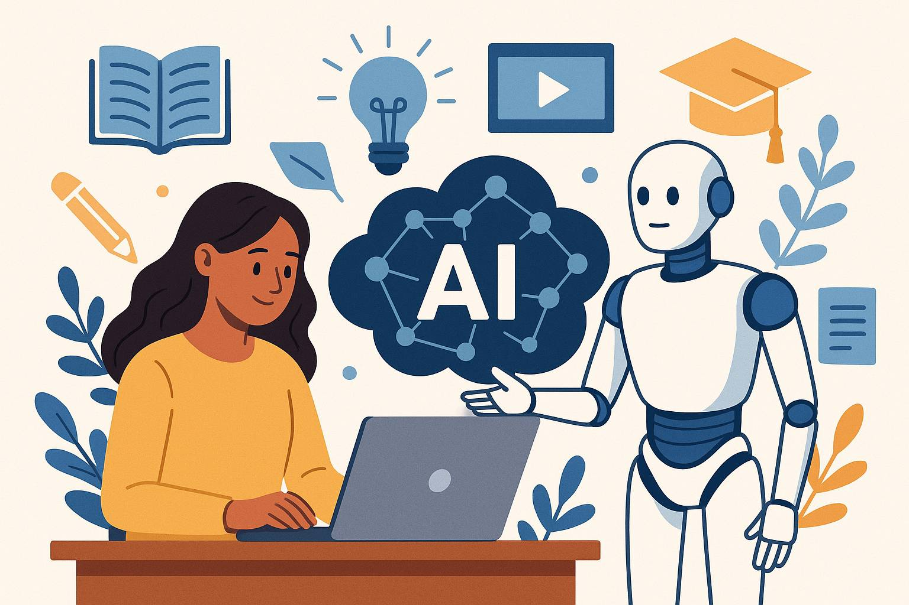
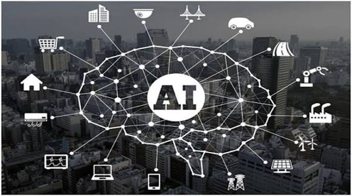
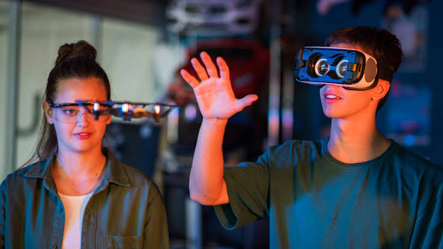
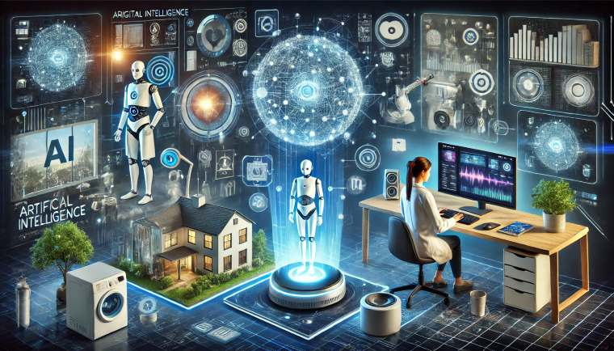

🎓 Educación
Tutores virtuales, rutas de aprendizaje personalizadas y apoyo para detectar dificultades a tiempo.

Tutores virtuales, rutas de aprendizaje personalizadas y apoyo para detectar dificultades a tiempo.
Apoyo al análisis de estudios como radiografías, descubrimiento de fármacos y seguimiento de pacientes.

Navegación y rutas inteligentes, gestión de tráfico y sistemas de asistencia a la conducción.
Automatización de procesos, análisis de datos, atención al cliente y mantenimiento predictivo.

Recomendaciones de música, series y videos, además de efectos visuales y videojuegos.

Asistentes de voz, corrección de texto, mejora de fotos en la cámara y filtros de correo no deseado.
En las fábricas modernas la IA se combina con sensores y robots:

La sección Reconocimiento IA usa un modelo de visión por computadora entrenado con Teachable Machine: tú le muestras una fotografía y él devuelve la probabilidad de cada categoría. Es el mismo principio que usan aplicaciones médicas, de seguridad o de control de calidad industrial.